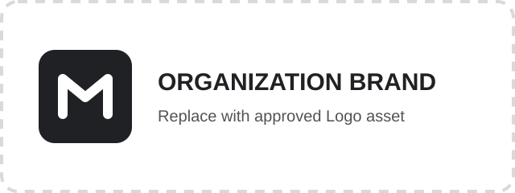

Martin Brand System
品牌架构与单主品牌原则
Martin 品牌系统严格区分 Life (个人身份) 与 Work (岗位/机构身份)。任何产物在排版设计前，必须首先确定其归属并选择单一主品牌。
Martin 个人品牌
适用于个人生活、学习总结、技术洞察、思考反思与创意表达。
- 默认视觉风格: Light Editorial (浅色编辑风)
- 暗色高影响风格: Martin-Borealis (极光暗色)
- 主标志 (Logo): Balanced Signal M / Martin
- 核心色板: Navy / Signal Cyan / Mint
Organization Brand
适用于公司职责、organization 沟通、合规、客户信任与市场准入。
- 默认视觉风格: organization-approved deck / Work Editorial
- 主标志 (Logo): Organization Brand 双路径网关
- 核心色板: Deck Red / Charcoal / White
- 个人署名规范: 仅允许 Byline，禁止并列主 Logo
Anthropic 归档风格
仅在明确要求 Anthropic 原始风格时保留，不套用 Martin 默认样式。
- 适用场景: 特定归档/Anthropic 专项产物
- 标志资产: 按 Anthropic 官方要求
严禁在同一产物中将 Martin 个人 Logo 与 Organization Brand 机构 Logo 摆放为同等地位的联合主标 (Co-branded Lockup)。在 Work 产物中，Martin 仅能以文本 Byline (例如 Author: Martin Xie) 出现。
Life 个人品牌体系 (Light Editorial)
克制、清晰、证据驱动的浅色编辑风格。强调高可读性、优雅的版式与明确的知识层次。
Life 色板与 Design Tokens
浅色编辑风以 Navy 为基线沉淀权威感，配以 Cyan 和 Mint 展现数字活力。
字体层级与内容四大支柱
- 英文 Display/标题: Spline Sans (600/700)
- 英文 正文: Barlow (400/500)
- 深度长文/引用: Charter / 思源宋体 (Source Han Serif SC)
- 中文 标题/UI: 思源黑体 (Source Han Sans SC) / 微软雅黑
- Cybersecurity & AI through a systems lens (系统视角网络安全与 AI)
- Sense-making: patterns, trade-offs, and second-order effects (模式与权衡)
- Personal practice: learning, health, relationships, reflection (个人实践)
- Creative experiments: tools, visual thinking, new expression (创意表达)
Martin-Borealis 暗色表达变体
Life 品牌的命名暗色变体。专用于个人数字封面、Keynote 大屏演示、故事型长文或高视觉冲击力产物。非通用默认。
Martin-Borealis 视觉演示卡片
采用 Deep Navy (#091231) 为深色基调，辅以极光青 Cyan (#29DDDA) 与薄荷绿 Mint (#16FFBB) 提亮。卡片采用半透明 Navy (rgba(10,18,49,0.78)) 配合 12px 圆角与微弱高光边框。
背景模糊控制在 10px 以内，严禁在密集阅读正文区域背景使用炫光。段落正文保持高对比度 #E0E7EA，绝不直接将段落设置为亮青或亮绿。
Organization Brand 工作品牌体系
代表机构专业能力、合规性与对外合作信任。采用严谨、权威的红黑白配色风格。
Organization Brand 品牌使命
Work 色板 Token
合规与背书规则 (Governance)
- 双路径网关意象: 炭灰路径代表专业网络安全能力与透明度；红色路径代表对外合作与市场准入。
- 母品牌背书 (Parent Brand Endorsement): 必须保持在核心 Logo 保护区之外，作为独立 Endorsement 标识放置。
- 使命短语 (Mission Line): 仅在长图或大型纵向封面上使用，小尺寸 Footer 严禁强行嵌入。
Logo 官方资产画廊
展示 Life (Martin 个人) 与 Work (Organization Brand) 的全部生产级 SVG 资产在浅色与深色背景下的表现。
Life Assets Martin Personal Logos
Work Assets Organization Brand Logos

场景路由决策矩阵
针对不同产物形态（文章、报告、一页纸、PPT、封面等），快速查阅 Life 与 Work 的对应规范。
| 产物类型 | Life 个人路由 | Work 机构路由 |
|---|---|---|
| 博客 / 文章 (Blog / Essay) | Light Editorial 默认；包含 Martin 个人署名与 Balanced Signal Logo。 | 通常不适用（若发表机构文章，需使用 Work 模板与 Organization Brand 标识）。 |
| 洞察报告 (Insight Report) | Light Editorial，强调高密度图表与实证分析。 | Work Editorial 规范；顶部使用 Organization Brand 机构 Logo。 |
| 一页纸 (One-Pager) | Martin Light Editorial 一页纸视觉系统。 | Work 色板与机构身份一页纸模版。 |
| 演示文稿 (Slides / PPTX) | Personal Light Slide 或 Martin-Borealis (若显式要求)。 | 运行时注入: 使用获得授权的机构 PPTX 模板。 |
| 社交 / 封面 (Social / Cover) | 允许使用数字渐变或 Borealis 暗色风格。 | 使用 Work Palette (红/炭灰/白)；严禁放入 Martin 个人 Logo。 |
| 简历 / 作品集 (Resume / Portfolio) | Martin 个人 Identity 专属套件。 | 不适用（除非显式内部岗位履历申报）。 |
合规治理与 Do / Don't 准则
确保品牌一致性、可访问性（WCAG AA）与实证严肃性的红线准则。
- 坚持单主品牌: 每件产物有且仅有一个主品牌，明确归属于 Life 或 Work。
- 保证 WCAG AA 对比度: 正文文本必须满足可读性要求；段落严禁使用 Cyan 或 Mint。
- 证据驱动视觉: 优先使用真实的个人照片、系统截图、数据图表与架构图。
- 按背景选择 Logo 变体: 浅色背景用 Master Navy/Color，深色背景用 White/Dark 变体。
- 保持高自由度响应式: 确保在移动端 (375px) 与桌面端 (1440px) 均无横向溢出。
- 严禁混用色板: 绝不将 Life 的蓝绿系统默认混入 Work Organization Brand 产物。
- 严禁作同等联合主标: 在 Work 产物中，禁止将 Martin 个人 Logo 与 Work Logo 并列放大。
- 严禁使用已废弃 Logo: 严禁在任何地方使用已废弃的旧版 organization Publish Logo。
- 严禁无授权 Co-branding: 严禁未经授权擅自创建联合品牌 Lockup。
- 严禁装饰性假图表: 严禁使用赛博朋克霓虹、电路背景、3D 假仪表盘等纯装饰性科技元素。